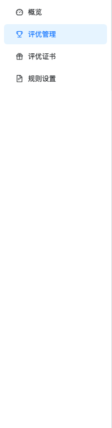
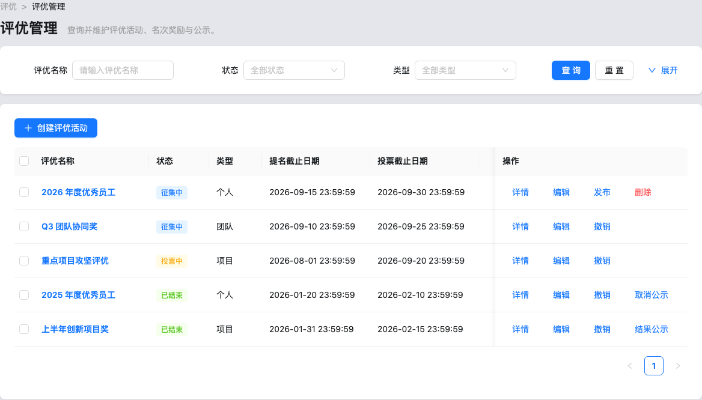
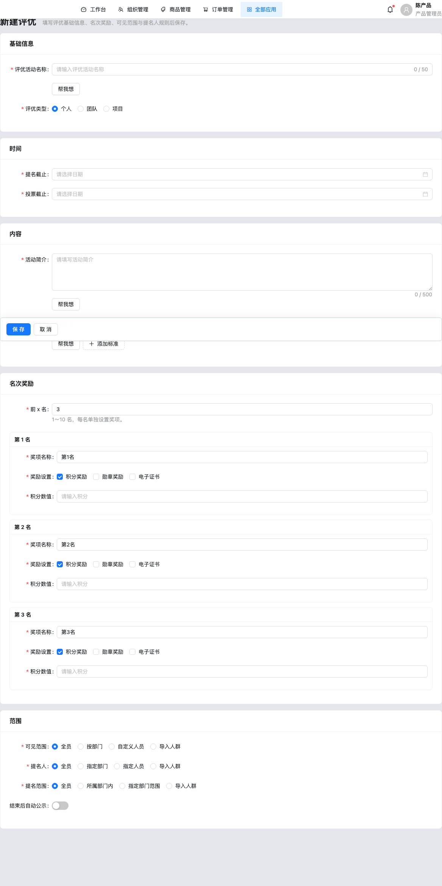
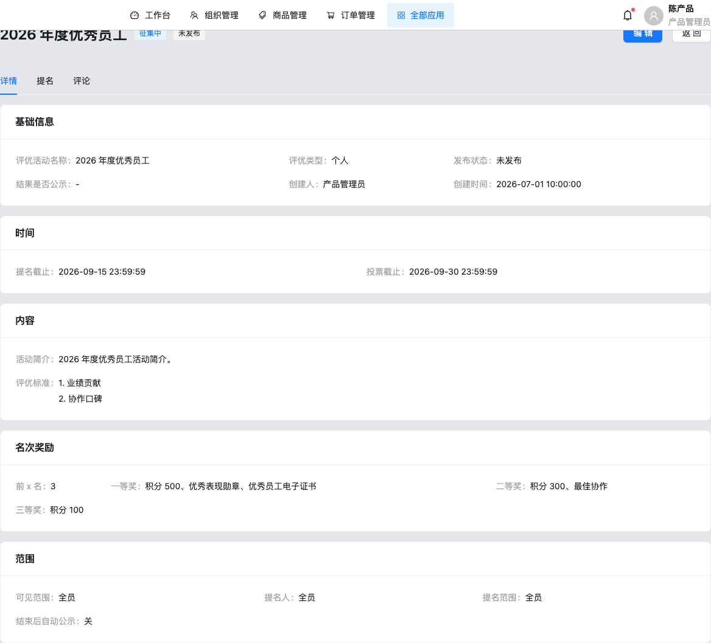
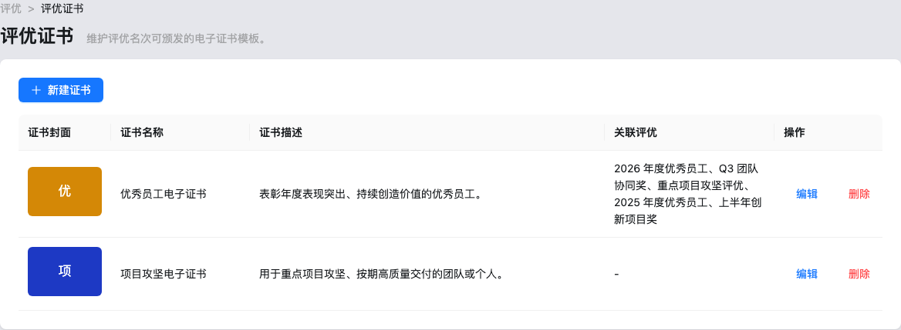

评优后台 产品需求文档
1. 文档说明
- 范围：应用「评优」：评优管理、证书；概览与规则设置为 PlaceholderPage
- 日期：2026-08-24
2. 产品概述
评优活动配置（提名/投票截止、名次奖励）、提名审核、结果公示与证书模板管理。
3. 页面结构 / 信息架构

- 侧栏：概览(占位) / 评优管理 / 评优证书 / 规则设置(占位)
- 详情 Tab：detail / nominations / comments（评论 Empty 占位）
4. 已实现功能清单
| 模块 | 功能 | 状态 |
|---|---|---|
| 评优列表/表单/详情 | 创建编辑发布公示、提名审核、名次奖励配置 | 代码已实现 |
| 证书 | 证书模板 CRUD | 代码已实现 |
| 概览/规则/评论 | 占位 | 根据页面推测需要 |
5. 用户流程
- 创建评优 → 配置范围与名次奖励 → 发布 → 审核提名 → 结束后结果公示
6. 页面级需求说明
6.1 评优管理

筛名称/状态/类型/提名投票截止/是否公示。行：详情编辑发布撤销删除（征集中且未发布）、结果公示。
6.2 新增评优 / 详情


表单：名称、类型(个人/团队/项目)、提名/投票截止、标准列表、前 x 名奖励(积分/勋章/证书)、可见/提名人/被提范围、自动公示。详情提名 Tab 可新建与审核。
6.3 评优证书

7. 数据字段与枚举
| 枚举 | 取值 |
|---|---|
| AwardType | 个人 / 团队 / 项目 |
| AwardStatus（推导） | 征集中 / 投票中 / 已结束 |
| PublishStatus | 未发布 / 已发布 |
| NominationReviewStatus | 待审核 / 已通过 / 已驳回 |
8. API / 数据接口清单
内存 awardStore / awardCertificateStore / awardNominationStore，无 localStorage。
9. 非功能需求
未保存离开确认；删除保护。投票计票 UI 未见。
10. 埋点与指标建议
建议补充 award_publish / nomination_approve / result_publicize。
11. 验收标准
- Given 征集中且未发布，When 删除，Then 可删。
- Given 已结束，When 结果公示，Then 公示标签更新。
- Given 个人类型提名，When 名单人数≠1，Then 校验失败。
12. 风险与待确认问题
- 概览/规则/评论占位；无投票与发奖流程页。
- 状态由截止时间推导，无 collectStartAt/未开始。
- 导入人群仅文件名；勋章复用活动 medalLibrary。